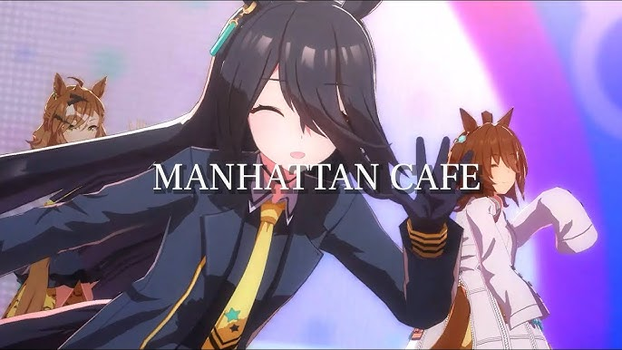

Lyrics
uuuuuu (umadacchi)
uuuuu (uma pyoi uma pyoi)
uuuu (sukidacchi) uuuu (uma poi)
uma uma umya umya san ni ichi fight!
ohisama pappaka kaisei resu (hai)
chokochoko nanige ni (sou waa so what)
daichi daini daisan shi go
(dan dan dan dan deban ga chikazuki)
men tama giragira shussou desu (hai)
kyou mo mechamecha
hachamecha da (chyaa!)
gachi oikomi (toushitsu katto)
kome kuite (demo yasetaai!)
ano ko wa (waffo) sono ko wa (beigo)
doitsumo koitsumo arara (ribando)
nakanaide (hai) fukun ja ne (oi)
akachin nutte mo (naoranai) (haa?)
kyou no shouri no megami wa
watashi dake ni chuu suru
niji no kanata e yukou
kaze o kitte daichi kette
kimi no naka ni hikari tomosu
(dooki doki doki doki
doki doki doki doki)
kimi no aiba ga **(ORE NO AIBA GA)
zukyun dokyun hashirideshi (fufu)
bakyun bukyun kakete yuku yo (fuwa fuwa)
konna reesuu wa hajimete
(san ni ichi Fight!)
zukyun dokyun mune ga nari (fufu)
bakyun bukyun daisuki da yo (fuwa fuwa)
kyou mo kanaderu
hapi hapi daarin san ni ichi Go Fight
upi upi hanii san ni ichi (uuu Fight!!)
uuuuuu (umadacchi)
uuuuu (uma pyoi uma pyoi)
uuuu (sukidacchi) uuuu (uma poi)
uma uma umya umya
kimi no aiba ga **(ORE NO AIBA GA)
zukyun dokyun hashirideshi (fufu)
bakyun bukyun kakete yuku yo (fuwa fuwa)
konna omoi wa hajimete
(san ni ichi Fight!)
zukyun dokyun mune ga nari (fufu)
bakyun bukyun daisuki da yo (fuwa fuwa)
kyou mo kanaderu
hapi hapi daarin san ni ichi Go Fight
upi upi hanii san ni ichi (uuu Fight!!)
Back to the cafe...